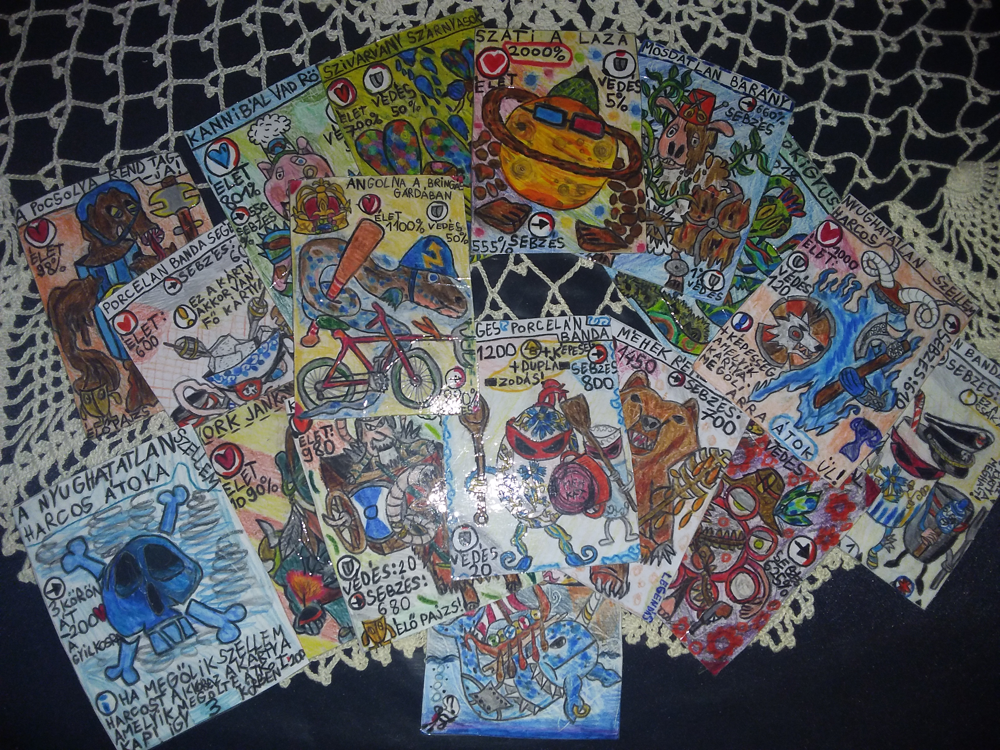

Üdvözöllek Lóczy Levente vagyok a Wesselényi Miklós Műszaki Technikum diákja. Általános iskolás éveim alatt sokat gondolkoztam arról ,hogy mit csináljak magammal merre felé induljak, milyen szakma irányába? Ez nekem egy eléggé bizonytalan talaj volt de egyszer leültem és elgondolkoztam arról, hogy mit szeretek csinálni és mik a hobbijaim mert szerintem ezek alapján lelehet szürni ki melyik úton induljon el.
Két elfoglaltságot szerettem igazán:
Gondolom most kérdezed, hogy ezekből a hobbikból hogy a fenébe mentem programozós szakra a válaszom nagyon egyszerű, mivel maga a sima rajzolásból nem lehet megélni sem a társas játék készitésből ezért ugy gondoltam hogy kreativitásomat felhasználva társasjátékaimat elektronikus uton játék programozással valósitom meg....az hogy ebből mi lesz az csak rajtam múlik... de ez még a jővő zenéje.
Egyelőre ennyit magamról!
Az álmaim várnak...hogy ne csak papír formába éljenek...